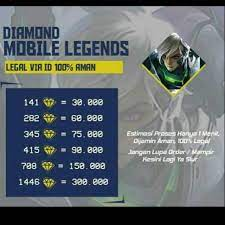

Tzy Community©
Donkey: ONIC bakal jumpa EVOS di grand final MPL ID Season 7

MPL ID Season 7 sedang memasuki pekan istirahat. Setelah delapan pekan beruntun menjalani regular
season, enam tim yang lolos mendapat jeda waktu sampai playoff digelar. Persaingan musim ini
terbilang sangat ketat. Enam tim yang lolos bisa dibilang punya kekuatan berimbang dan mampu saling
mengalahkan. Hanya konsistensi yang benar-benar menentukan posisi di klasemen.
Menengok dari faktor tersebut, ONIC Esports dan EVOS Legends yang mendapat priviledge ke upper
bracket karena finis di dua teratas. ONIC terbilang paling mendominasi karena memiliki poin
tertinggi dan jumlah menang terbanyak. Sementara EVOS Legends, RRQ Hoshi, dan Bigetron Alpha sangat
tipis perbedaannya karena jumlah total kemenangan yang mirip
Playoff dijamin akan semakin menarik dan menjadi ajang pembuktian siapa tim dengan mental serta
gameplay paling konsisten. Sayangnya di hari pertama nanti dua di antara Genflix Aerowolf, RRQ
Hoshi, Bigetron Alpha, dan Alter Ego harus pulang duluan.
Legenda Mobile Legends, Yurino “Donkey” Putra, angkat bicara soal ini. Saat live streaming dan
podcast dengan beberapa rekannya, Donkey mengungkap prediksinya. Ia meyakini bahwa ONIC akan
berjumpa dengan EVOS Legends di grand final. Walau jalan ONIC yang akan mulus, sementara EVOS akan
turun ke lower bracket.
“Genflix vs RRQ yang menang RRQ. Sedangkan Alter Ego vs Bigetron Alpha, BTR kalah. Ketika AE
menghadapi ONIC, ONIC yang menang. Tapi, EVOS akan kalah melawan RRQ di upper. RRQ vs ONIC di final
upper yang menang ONIC,” ungkapnya
“Meski begitu perasaan saya tak tahu benar atau tidak, EVOS yang akan naik ke atas (dari lower
bracket). Grand final ONIC vs EVOS,” pungkas dia. Semua baru sekadar prediksi. Keenam tim punya
peluang yang sama dan perlu persiapan lebih untuk bisa melaju jauh.
Sc: oneesport.gg
Jasa Joki Terpercaya

2022 masih di stuck Epic? Joki di Abs Net aja.
Harganya Murah, Pengerjaan cepat dan
Terpercaya
Jasa Topup Diamond
Hari gini masih belum punya Skin Favorit lo?
Ayo Topup di Tzy Store, Harganya Murah, pengerjaan
cepat dan 100% Aman